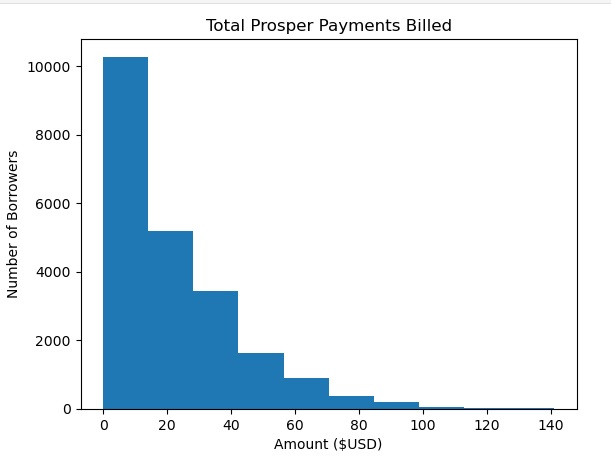
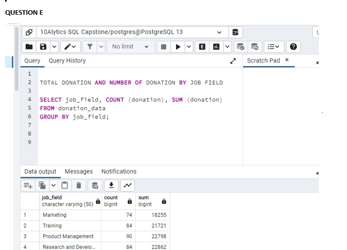
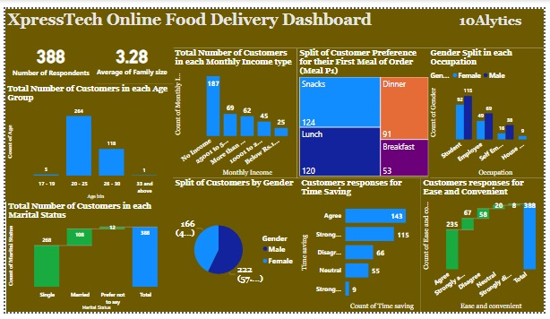
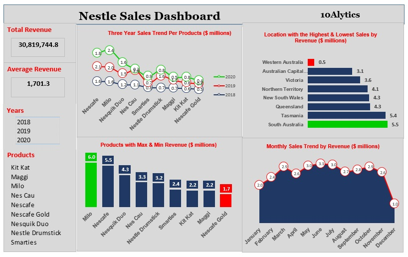
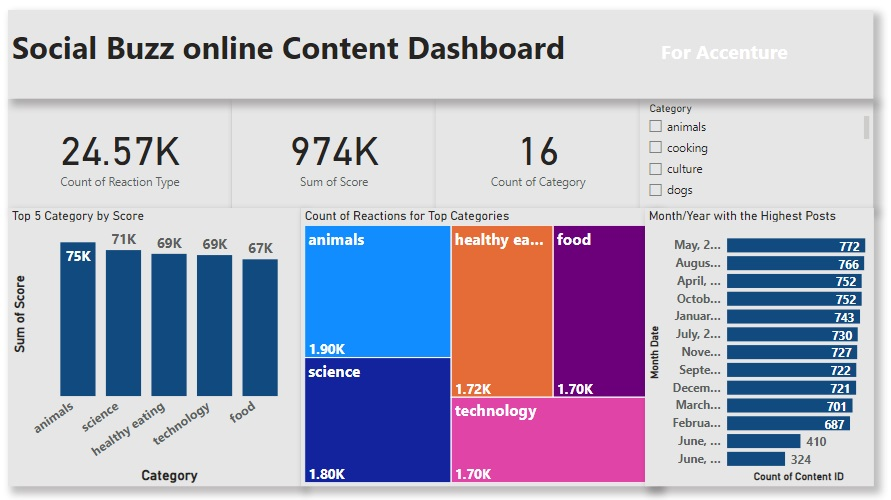
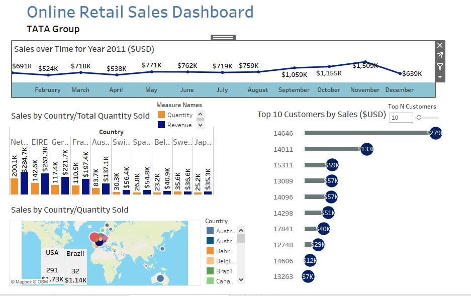

PYTHON PROJECT: Prosper Loan Analysis
This is a review of the activities that affect the performance of Prosper Mortgage Firm. Illustrated through the use of data wrangling and data visualization.

SQL PROJECT: Education for All
As a Data Analyst working for the charity, Education for All. I have been asked by the Head of Fundraising to present the data on donor insights and donation rates.

POWER BI PROJECT: XpressTech Delivery Dashboard
XpressTech is a tech startup based in Lagos, Nigeria. The startup launched as a ride hailing company in 2019, before diversifying into Logistics and Food Delivery in 2020. This Dashboard visualizes the analysis on food deliveries based on customers preferences.

MS EXCEL PROJECT: Nestle Sales Dashboard
Nestlé is the largest food company in the world, marketing over 8,500 brands and 30,000 products. The company wants to expand its business by adding new product lines. However, the Head of Growth and Strategy suggested that it was important to know the performanceof the current products.This project is to develop a product comparison dashboard to help the company take a decision on its expansion plans.

VIRTUAL INTERNSHIP - ACCENTURE: Social Buzz Online Content Dashboard
Social Buzz was founded by two former engineers from a large social media conglomerate, one from London and the other from San Francisco. They have scaled quicker than anticipated and need the help of an advisory firm to oversee their scaling process effectively. With the dataset provided by Accenture, the charts illustrates the analysis of the top 5 and the number of reactions in each top category of the company.

VIRTUAL INTERNSHIP - TATA GROUP: Data Analysis and Visualization Project
The virtual experience programme is with one of Tata Group companies, Tata Insights and Quants or Tata iQ. The aim is to gain insight on how to solve some of the most complex business problems using data visualisation solutions, such as Tableau. With the data provided by Tata i was able to illustrate the top 10 customers, top 10 regions and the sales trend over the years.